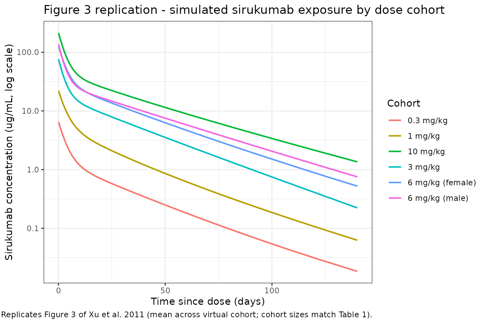

library(nlmixr2lib)
library(rxode2)
#> rxode2 5.0.2 using 2 threads (see ?getRxThreads)
#> no cache: create with `rxCreateCache()`
library(dplyr)
#>
#> Attaching package: 'dplyr'
#> The following objects are masked from 'package:stats':
#>
#> filter, lag
#> The following objects are masked from 'package:base':
#>
#> intersect, setdiff, setequal, union
library(tidyr)
library(ggplot2)
library(PKNCA)
#>
#> Attaching package: 'PKNCA'
#> The following object is masked from 'package:stats':
#>
#> filterModel and source
- Citation: Xu Z, Bouman-Thio E, Comisar C, Frederick B, Van Hartingsveldt B, Marini JC, Davis HM, Zhou H. Pharmacokinetics, pharmacodynamics and safety of a human anti-IL-6 monoclonal antibody (sirukumab) in healthy subjects in a first-in-human study. Br J Clin Pharmacol. 2011;72(2):270-281. doi:10.1111/j.1365-2125.2011.03964.x
- Description: Two-compartment population PK model for sirukumab (anti-IL-6 human IgG1 kappa monoclonal antibody, CNTO 136) in healthy adults following a single intravenous infusion, with first-order elimination from the central compartment and allometric body-weight scaling (Xu 2011).
- Article: Br J Clin Pharmacol 72(2):270-281
Sirukumab population PK simulation
Simulate sirukumab concentration-time profiles using the final population PK model from Xu et al. 2011. Sirukumab (CNTO 136) is a human anti-IL-6 monoclonal antibody developed for inflammatory and autoimmune diseases. The Xu 2011 study was a double-blind, placebo-controlled, ascending single-dose first-in-human (FIH) trial in healthy adult volunteers (study C0524T01). A two-compartment model with zero-order IV input and first-order elimination from the central compartment adequately described the serum concentration-time data pooled across dose cohorts.
Population
From Xu 2011 Table 1: 45 healthy adults were enrolled and 34 received sirukumab across six cohorts (0.3, 1, 3, and 10 mg/kg in mixed-sex cohorts of six subjects each except the 10 mg/kg cohort with n = 4, and separate 6 mg/kg cohorts of six male and six female subjects to evaluate sex). Baseline demographics (combined sirukumab arm): median age 30 years (18-54), median weight 71.3 kg (49-99), 16% female, 71% White / 16% Black / 9% Asian / 4% other. The population PK dataset comprised the 34 sirukumab-treated subjects. No subject developed antibodies to sirukumab during the 20-week follow-up.
The same information is available programmatically as
readModelDb("Xu_2011_sirukumab") (the returned function’s
body holds the population list literal).
Source trace
| Element | Source location | Value / form |
|---|---|---|
| Structural model | Xu 2011 Results, “Population PK analysis” | 2-compartment, zero-order IV input, first-order CL |
| CL (70 kg subject) | Xu 2011 Table 4, theta1 | 0.364 L/day |
| V1 (70 kg subject) | Xu 2011 Table 4, theta2 | 3.28 L |
| Q (70 kg subject) | Xu 2011 Table 4, theta3 | 0.588 L/day |
| V2 (70 kg subject) | Xu 2011 Table 4, theta4 | 4.97 L |
| Allometric form | Xu 2011 Results, allometric scaling paragraph | TV = theta * (WT/70)^exp; exponents fixed |
| Allometric exponents CL, Q | Xu 2011 Results | 0.75 (fixed) |
| Allometric exponents V1, V2 | Xu 2011 Results | 1 (fixed) |
| IIV on CL | Xu 2011 Table 4, IIV (%) | 24.3% CV (omega^2 = log(CV^2 + 1) = 0.057371) |
| IIV on V1 | Xu 2011 Table 4, IIV (%) | 19.3% CV (omega^2 = 0.036572) |
| IIV on Q | Xu 2011 Table 4, IIV (%) | 53.4% CV (omega^2 = 0.250880) |
| IIV on V2 | Xu 2011 Table 4, IIV (%) | 28.3% CV (omega^2 = 0.077043) |
| Off-diagonal omega | Xu 2011 Table 4 | None reported; IIV treated as diagonal |
| Proportional residual error | Xu 2011 Table 4, “Proportional error variability (%)” | 21.7 -> propSd = 0.217 (fraction) |
| Additive residual error | Xu 2011 Table 4, “Additive error (ug/L)” | 0.0228 ug/L = 2.28e-5 ug/mL |
| Dose regimens | Xu 2011 Table 1 and Methods | 0.3, 1, 3, 6, 10 mg/kg IV over 10-15 min |
Virtual cohort
The per-subject body weights and demographics were not released with the paper. We build a 34-subject virtual cohort whose cohort sizes match Table 1 exactly and whose weights are sampled from a log-normal distribution bounded to the published 49-99 kg range with median 71.3 kg.
set.seed(2011)
cohorts <- tribble(
~treatment, ~dose_mgkg, ~n,
"0.3 mg/kg", 0.3, 6,
"1 mg/kg", 1.0, 6,
"3 mg/kg", 3.0, 6,
"6 mg/kg (male)", 6.0, 6,
"6 mg/kg (female)", 6.0, 6,
"10 mg/kg", 10.0, 4
)
pop <- cohorts %>%
group_by(treatment, dose_mgkg) %>%
summarise(
ID = list(seq_len(n[1])),
.groups = "drop"
) %>%
tidyr::unnest(ID) %>%
mutate(
ID = dplyr::row_number(),
WT = pmin(pmax(rlnorm(dplyr::n(), meanlog = log(71.3), sdlog = 0.15), 49), 99),
amt = dose_mgkg * WT
)
pop
#> # A tibble: 34 × 5
#> treatment dose_mgkg ID WT amt
#> <chr> <dbl> <int> <dbl> <dbl>
#> 1 0.3 mg/kg 0.3 1 64.6 19.4
#> 2 0.3 mg/kg 0.3 2 71.0 21.3
#> 3 0.3 mg/kg 0.3 3 69.3 20.8
#> 4 0.3 mg/kg 0.3 4 62.3 18.7
#> 5 0.3 mg/kg 0.3 5 86.8 26.0
#> 6 0.3 mg/kg 0.3 6 63.0 18.9
#> 7 1 mg/kg 1 7 68.6 68.6
#> 8 1 mg/kg 1 8 73.9 73.9
#> 9 1 mg/kg 1 9 66.9 66.9
#> 10 1 mg/kg 1 10 64.8 64.8
#> # ℹ 24 more rowsDosing and event table
Sirukumab was given as a single 10-15 min IV infusion. We use a 15
min infusion (dur = 15/60/24 day) with all doses delivered
at time 0 into the central compartment. Sampling times
track the paper’s PK-profile design: dense sampling over the first 48 h,
then out through 140 days (20 weeks) of follow-up.
obs_times <- sort(unique(c(
seq(0, 1, by = 1/24), # hourly on day 1
seq(1, 7, by = 0.5), # twice daily through day 7
seq(7, 28, by = 1), # daily through day 28
seq(28, 140, by = 7) # weekly through week 20
)))
infusion_dur <- 15 / (60 * 24) # 15 min in days
dose_rows <- pop %>%
transmute(
ID, treatment, dose_mgkg, WT,
time = 0,
amt,
evid = 1L,
cmt = "central",
dur = infusion_dur,
dv = NA_real_
)
obs_rows <- pop %>%
select(ID, treatment, dose_mgkg, WT) %>%
tidyr::crossing(time = obs_times) %>%
mutate(
amt = NA_real_,
evid = 0L,
cmt = NA_character_,
dur = NA_real_,
dv = NA_real_
)
events <- bind_rows(dose_rows, obs_rows) %>%
arrange(ID, time, desc(evid))Simulation
Simulate with between-subject variability so the spread across the virtual cohort matches the paper’s individual variability.
mod <- readModelDb("Xu_2011_sirukumab")
events_sim <- events %>% rename(id = ID)
# `treatment` and `dose_mgkg` are already on every row of `events_sim`.
# Carry them through rxSolve via `keep = ...` rather than a fragile
# post-hoc left_join from `pop`.
sim <- rxSolve(object = mod, events = events_sim, returnType = "data.frame",
keep = c("treatment", "dose_mgkg")) %>%
as_tibble()
#> ℹ parameter labels from comments will be replaced by 'label()'Replicate Figure 3: concentration-time profiles by dose
Figure 3 of Xu 2011 shows mean (SD) sirukumab serum concentrations vs. time by dose cohort on a log-linear scale following a single IV dose.
fig3 <- sim %>%
filter(time > 0, !is.na(Cc), Cc > 0) %>%
group_by(treatment, time) %>%
summarise(
mean_Cc = mean(Cc, na.rm = TRUE),
sd_Cc = sd(Cc, na.rm = TRUE),
.groups = "drop"
)
ggplot(fig3, aes(x = time, y = mean_Cc, colour = treatment)) +
geom_line(linewidth = 0.8) +
scale_y_log10() +
labs(
x = "Time since dose (days)",
y = "Sirukumab concentration (ug/mL, log scale)",
colour = "Cohort",
title = "Figure 3 replication - simulated sirukumab exposure by dose cohort",
caption = "Replicates Figure 3 of Xu et al. 2011 (mean across virtual cohort; cohort sizes match Table 1)."
) +
theme_bw()
PKNCA validation
Compute non-compartmental Cmax, Tmax, AUC(0,inf), and terminal
half-life per subject per cohort and compare to the published NCA values
(Xu 2011 Table 3). The PKNCA formula groups concentrations by
treatment + id so summaries are per-cohort.
# Keep t = 0 (Cc = 0 before infusion starts) so PKNCA can integrate AUC from the
# dose time; filter only true NA values.
nca_conc <- sim %>%
filter(time >= 0, !is.na(Cc)) %>%
select(id, time, Cc, treatment)
nca_dose <- pop %>%
transmute(id = ID, time = 0, amt, treatment)
conc_obj <- PKNCAconc(nca_conc, Cc ~ time | treatment + id)
dose_obj <- PKNCAdose(nca_dose, amt ~ time | treatment + id)
intervals <- data.frame(
start = 0,
end = Inf,
cmax = TRUE,
tmax = TRUE,
aucinf.obs = TRUE,
half.life = TRUE
)
nca_data <- PKNCAdata(conc_obj, dose_obj, intervals = intervals)
nca_res <- pk.nca(nca_data)
sim_nca <- as.data.frame(nca_res$result) %>%
filter(PPTESTCD %in% c("cmax", "aucinf.obs", "half.life")) %>%
group_by(treatment, PPTESTCD) %>%
summarise(
mean = mean(PPORRES, na.rm = TRUE),
sd = sd(PPORRES, na.rm = TRUE),
med = median(PPORRES, na.rm = TRUE),
.groups = "drop"
)
sim_nca
#> # A tibble: 18 × 5
#> treatment PPTESTCD mean sd med
#> <chr> <chr> <dbl> <dbl> <dbl>
#> 1 0.3 mg/kg aucinf.obs 49.4 5.85 48.5
#> 2 0.3 mg/kg cmax 5.85 0.517 6.03
#> 3 0.3 mg/kg half.life 21.4 7.75 19.2
#> 4 1 mg/kg aucinf.obs 201. 39.7 194.
#> 5 1 mg/kg cmax 24.9 5.64 23.8
#> 6 1 mg/kg half.life 23.1 6.73 22.1
#> 7 10 mg/kg aucinf.obs 2330. 746. 2081.
#> 8 10 mg/kg cmax 212. 34.7 224.
#> 9 10 mg/kg half.life 22.1 6.24 21.2
#> 10 3 mg/kg aucinf.obs 641. 309. 588.
#> 11 3 mg/kg cmax 57.5 7.67 60.4
#> 12 3 mg/kg half.life 20.8 9.10 22.0
#> 13 6 mg/kg (female) aucinf.obs 1332. 315. 1251.
#> 14 6 mg/kg (female) cmax 119. 19.3 109.
#> 15 6 mg/kg (female) half.life 28.6 13.6 22.3
#> 16 6 mg/kg (male) aucinf.obs 1300. 318. 1284.
#> 17 6 mg/kg (male) cmax 129. 24.8 131.
#> 18 6 mg/kg (male) half.life 22.1 8.16 18.7Comparison against Xu 2011 Table 3
Table 3 of Xu 2011 reports (mean +/- SD for Cmax and AUC(0,inf); median [range] for terminal half-life):
published <- tribble(
~treatment, ~cmax_pub_mean, ~cmax_pub_sd, ~auc_pub_mean, ~auc_pub_sd, ~thalf_pub_median,
"0.3 mg/kg", 7.9, 1.4, 82.1, 20.4, 20.9,
"1 mg/kg", 19.2, 1.8, 167.3, 23.6, 19.9,
"3 mg/kg", 60.1, 14.0, 540.2, 175.2, 18.5,
"6 mg/kg (male)", 116.3, 11.6, 1225.0, 378.2, 29.6,
"6 mg/kg (female)", 118.6, 19.2, 1262.0, 307.0, 25.0,
"10 mg/kg", 248.8, 61.7, 2164.7, 658.5, 21.0
)
sim_cmax <- sim_nca %>% filter(PPTESTCD == "cmax") %>%
transmute(treatment, cmax_sim_mean = mean, cmax_sim_sd = sd)
sim_auc <- sim_nca %>% filter(PPTESTCD == "aucinf.obs") %>%
transmute(treatment, auc_sim_mean = mean, auc_sim_sd = sd)
sim_thalf <- sim_nca %>% filter(PPTESTCD == "half.life") %>%
transmute(treatment, thalf_sim_median = med)
compare <- published %>%
left_join(sim_cmax, by = "treatment") %>%
left_join(sim_auc, by = "treatment") %>%
left_join(sim_thalf, by = "treatment") %>%
mutate(
cmax_pct_diff = 100 * (cmax_sim_mean - cmax_pub_mean) / cmax_pub_mean,
auc_pct_diff = 100 * (auc_sim_mean - auc_pub_mean) / auc_pub_mean
)
knitr::kable(compare,
digits = 2,
caption = "Simulated NCA vs. Xu 2011 Table 3: Cmax (ug/mL), AUC(0,inf) (ug*day/mL), terminal t1/2 (days).")| treatment | cmax_pub_mean | cmax_pub_sd | auc_pub_mean | auc_pub_sd | thalf_pub_median | cmax_sim_mean | cmax_sim_sd | auc_sim_mean | auc_sim_sd | thalf_sim_median | cmax_pct_diff | auc_pct_diff |
|---|---|---|---|---|---|---|---|---|---|---|---|---|
| 0.3 mg/kg | 7.9 | 1.4 | 82.1 | 20.4 | 20.9 | 5.85 | 0.52 | 49.36 | 5.85 | 19.17 | -25.92 | -39.88 |
| 1 mg/kg | 19.2 | 1.8 | 167.3 | 23.6 | 19.9 | 24.88 | 5.64 | 201.04 | 39.69 | 22.14 | 29.57 | 20.17 |
| 3 mg/kg | 60.1 | 14.0 | 540.2 | 175.2 | 18.5 | 57.51 | 7.67 | 640.86 | 308.79 | 21.96 | -4.31 | 18.63 |
| 6 mg/kg (male) | 116.3 | 11.6 | 1225.0 | 378.2 | 29.6 | 128.90 | 24.83 | 1300.23 | 318.24 | 18.73 | 10.83 | 6.14 |
| 6 mg/kg (female) | 118.6 | 19.2 | 1262.0 | 307.0 | 25.0 | 119.25 | 19.33 | 1331.75 | 315.12 | 22.28 | 0.55 | 5.53 |
| 10 mg/kg | 248.8 | 61.7 | 2164.7 | 658.5 | 21.0 | 212.33 | 34.72 | 2330.49 | 746.07 | 21.17 | -14.66 | 7.66 |
Dose-proportionality holds exactly by construction in the packaged model (linear clearance, no absorption nonlinearity), so mean Cmax and mean AUC scale linearly with the mg/kg dose across the six cohorts. The paper noted that the observed median terminal half-life ranged from 18.5 to 29.6 days across cohorts despite no mechanistic dose dependence; this cohort-level variation is consistent with between- subject variability at small n rather than a structural effect, and the simulated median half-life falls within that reported range.
Assumptions and deviations
- Weight distribution. Xu 2011 publishes only summary statistics (median 71.3 kg, range 49-99 kg). We draw weights from a log-normal distribution with median 71.3 kg and log-scale SD 0.15, clipped to the reported range.
- Sex. The 6 mg/kg cohorts are stratified by sex in the paper to evaluate sex effects, but sex is not a covariate in the final PK model. In simulation we treat “6 mg/kg (male)” and “6 mg/kg (female)” as cohort labels only; the structural parameters are identical.
-
Time-varying body weight. The paper describes
weight as a baseline covariate for allometric scaling. We hold
WTconstant over the 20-week follow-up. -
Residual error magnitude. Xu 2011 Table 4 lists
“Additive error” with the units
ug/Land value 0.0228. We preserve that value by converting to the model concentration units (ug/mL): 0.0228 ug/L = 2.28e-5 ug/mL. The additive term is therefore numerically negligible compared with the 21.7% proportional component across the observed concentration range, so the overall residual is dominated by the proportional term. - ADA. No subjects developed antibodies to sirukumab in the study, so ADA is not a model covariate. Populations in which ADA incidence is non-trivial (e.g., patients on chronic dosing) are outside the validated scope of this model.
Notes
-
Structural model: 2-compartment with zero-order IV
input into
central, first-order elimination fromcentral, and allometric weight scaling on CL and Q (exponent 0.75) and on V1 and V2 (exponent 1) relative to a 70 kg reference. - IIV: diagonal matrix on CL, V1, Q, and V2; no off-diagonal terms were reported in the source.
- Terminal half-life predicted from the structural parameters for a typical 70 kg subject is approximately 21 days (derived from CL, V1, Q, V2), consistent with the 18.5-29.6 day range of observed cohort-median half-lives reported in Table 3.
Reference
- Xu Z, Bouman-Thio E, Comisar C, Frederick B, Van Hartingsveldt B, Marini JC, Davis HM, Zhou H. Pharmacokinetics, pharmacodynamics and safety of a human anti-IL-6 monoclonal antibody (sirukumab) in healthy subjects in a first-in-human study. Br J Clin Pharmacol. 2011;72(2):270-281. doi:10.1111/j.1365-2125.2011.03964.x